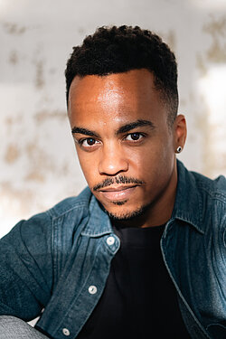

Biography
Body as
language

Lester René is a Cuban-born choreographer, dancer and cultural thinker based in Oldenburg, Germany. His work moves between contemporary dance, physical theatre and interdisciplinary performance, using the body as a precise and poetic language for conflict, transformation and collective imagination.
His choreographic practice ranges from large ensemble works to intimate dance-theatre formats, creating stage worlds where movement, music, image and dramaturgy operate as one living system. Across works such as From the Lighthouse, Quantum Leap, Saturn Return and Casita, he explores fear and courage, identity and change, intimacy and social tension.
Alongside his artistic work, Lester René develops ideas about culture as a public force. Invited as a guest author for the Nordwest-Zeitung series 50 Visionen für Oldenburg, he proposes artistic ecosystems where dance, music, theatre, film, design, architecture and visual arts enrich one another and extend into the life of the city.
Born in Cuba and trained in Camagüey, Madrid and Dresden — including studies at the Palucca University of Dance and a formative period with The Forsythe Company — he has been based in northern Germany since 2012.
Education
Palucca University of Dance, DresdenBA · 2012
Autonomous University of MadridArt History
Royal Conservatoire of Dance, MadridClassical Ballet
Vocational School of Arts, CamagüeyContemporary Dance
Notable collaborations
The Forsythe Company, Dresden2011
SemperOper Ballet, Dresden2011–12
Ballett Staatstheater Nürnberg2009
Awards
Best ChoreographyTorrelavega
Public Choice AwardNo-Ballet Contest
International festivals
27th Korean Dance FestivalCheongju
Festival Internacional de Benicasim
5th TanzGala, Graz
Ballettgala Kiel · Benefiz GalasDE